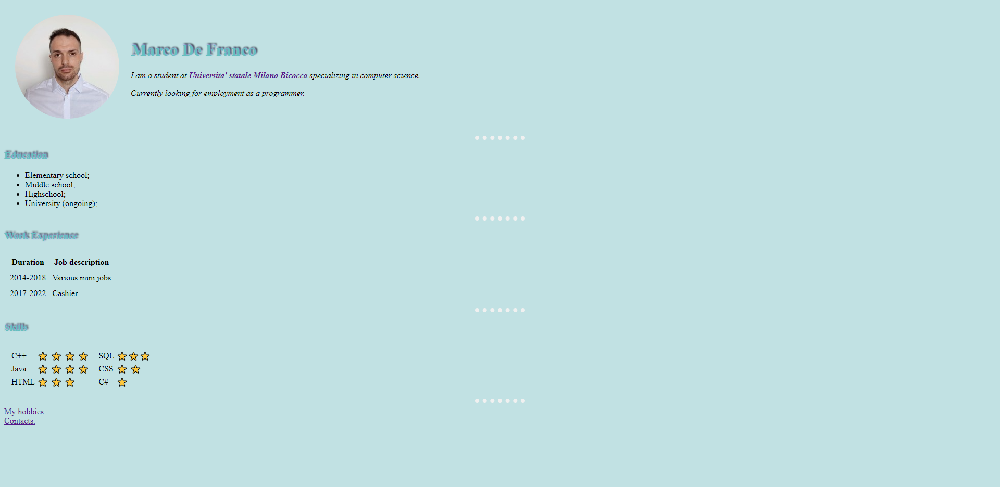
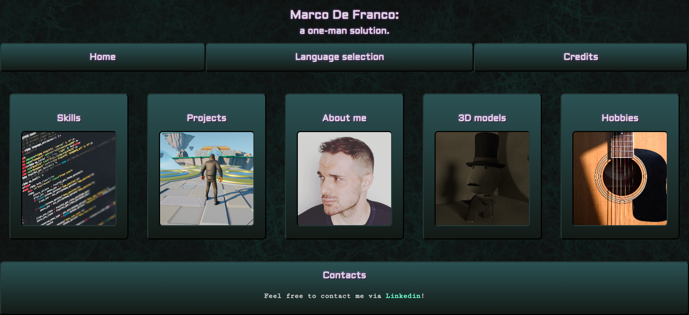
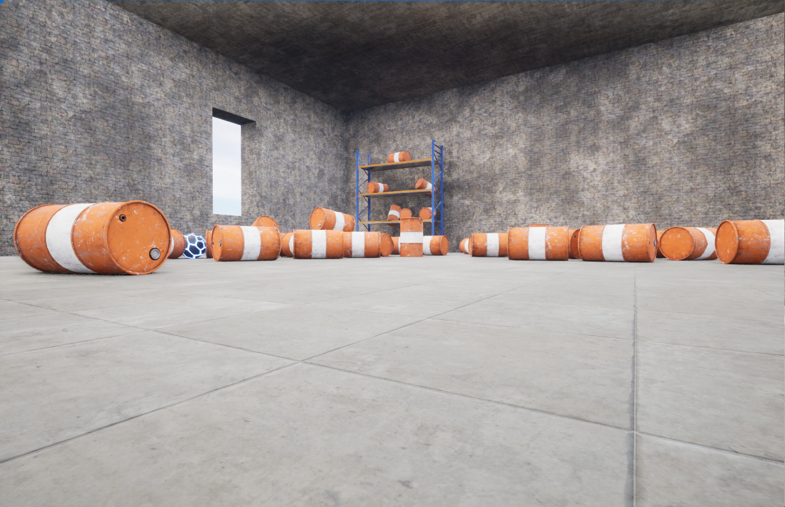
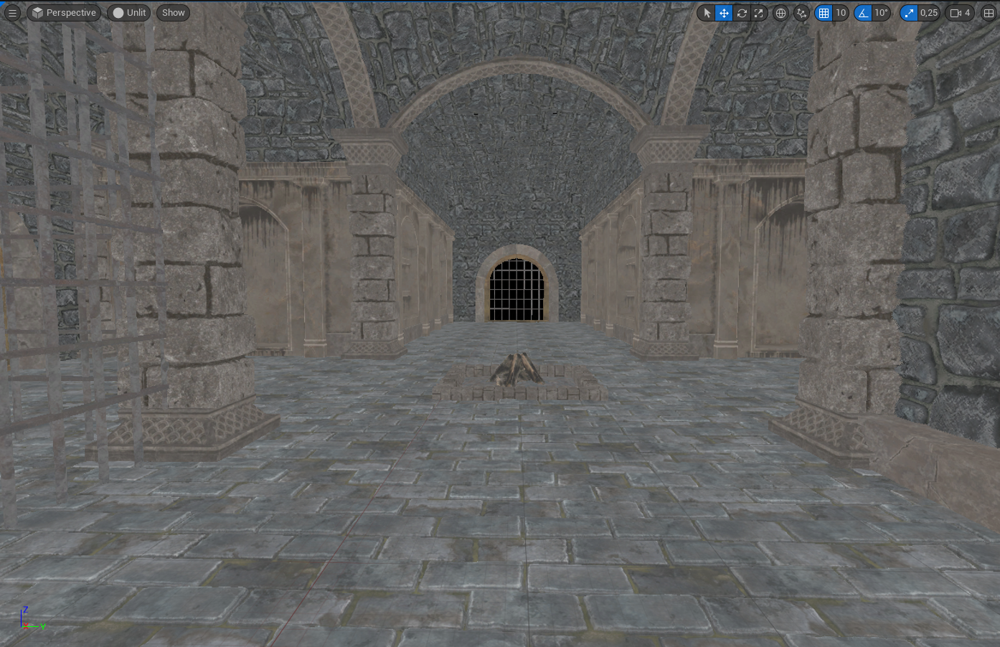

Projects:
My most recent works.
My first website (HTML)

My first attempt at creating a website (following a
Udemy course).
As the description suggests, it was made using HTML
only and, as you can tell from this screenshot, it wasn't pretty. A
programmer's website from the 90's would look much better than this.
Still, it was a good way to test my skills and prove that i could write
basic HTML code. Other than that, there's not much to say about it,
other that it won't be missed.
R.I.P.
My second (and current) website (HTML & CSS)

The current version of this website. This time, i
didn't rely on Udemy and only used my knowledge of the languages.
To call it "rough around the edges" would be the understatement of the
year. I'm perfectly aware that it's, to say it mildly, not exactly a
fresh looking design, with a three line collapsible sidebar and vibrant,
although sparingly used, mostly giving place to an edgy looking black
and white background. I also had the audacity to show the end result to
friends of mine who work as web designers and front end developers
(people who know the struggle about making the first website) and they
told me it looked nice. Then i showed it to friends of mine who had no
knowledge in the matter. Let's just say they weren't as nice.
Still, it doesn't make me any less proud of it. Any feedback
is good feedback!
I figured out a lot of things about CSS while making
it. The most important (and frustrating to learn about) being
positioning. Also, i got to make a lot of practice with flexboxes.
Of course, i'm already working on a new version but, despite it all,
i'll have fond memories of this one.
Warehouse wreckage (UE5 - Blueprints)

My first actual Udemy project from a UE5 and C++ tutorial, this was a
very beginner friendly introduction to Unreal Engine.
It's a mini-game in which you have to shoot all the barrels with a
limited number of ammo (the glowing metal ball on the ground).
Now, i already worked with UE4 before, so almost nothing seen here was
new to me.
Undeniably, though, i managed to make my very first game!
Is it good? Absolutely not. Is it bug-free? I'm 99% negative about it.
Is it exactly how the instructor planned it to be? Yes. Because it was
entirely meant to introduce novices to the ways of the almighty Unreal.
With that being said, will i try to remake a customized, bug-free
version of it? Yes. It needs redemption! Will it actually be good,
this time? I wouldn't go that far!
Obstacle assault (UE5 - Blueprints & C++)
 "If you know C++, you already know how to create scripts in
Unreal!"
"If you know C++, you already know how to create scripts in
Unreal!"
-Said no one ever.
This project was meant to introduce us students to the use of
C++ in Unreal Engine. Pretty exciting, right? Well...
If you get over throwing out the window sacred rules of programming
conventions such as "variable names should never start with an upper
case letter" and "you shouldn't be able to edit private variables"
then... still no.
During the development of this project, i made a few platform move
backwards and forwards and other ones rotate endlessly. Only using C++.
If it sounds boring don't worry, it is. But i understand that i have
to go through defining variables, functions and loops before getting
to the rich, almighty OOP in all its glory. So i'll be patient and
happy with what i've made so far: a 3D platformer with some... well...
platforms moving backwards and forwards and other ones spinning on
themselves.
So, is this game actually any good? No. will i give it another chance
by remaking it? Probably not. But i have learned some of the syntax
used by UE5. It's nightmare inducing, but i'm willing to go through
with it.
Crypt raider (UE5 - C++)

The instructor says there will be a full transition to
C++ in this project. I, honestly, doubt we'll ever leave
Blueprints out of the equation but, i'll gladly find myself to be
mistaken.
Anyway, i'm still at the level design part of this project so,
hopefully, there will be interesting updates in the future.